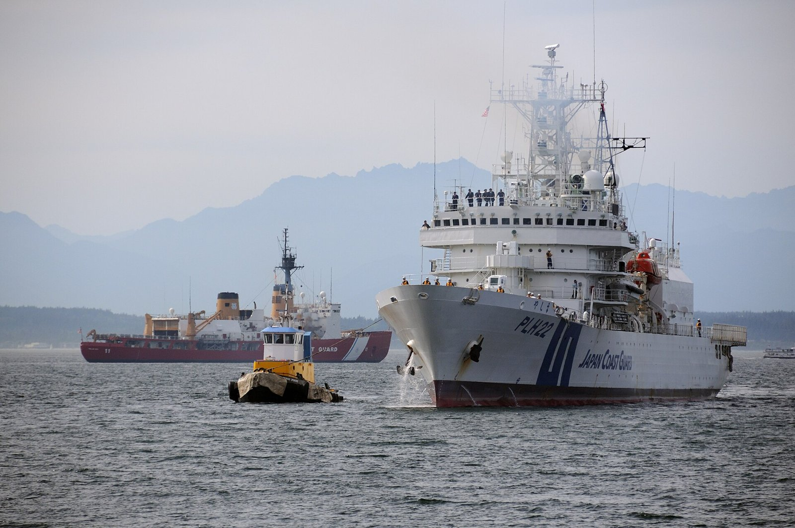

[한일수교 60년⑬] 사면초가의 숫자들, 중국 해경 92시간 8분과 접속수역 355일
러시아는 평화조약 협상을 중단했고 2026년 1월 6일 중국은 희토류 수출을 금지했다
중국 해경은 2024년 일본 접속수역에 355일 들어왔고 2026년 3월과 7월에도 충돌했다
납치 피해자 17명 문제는 멈춰 있고 북한은 러시아 파병으로 고립을 벗어났다
AI경제저널=김갑봉 기자 | 일본이 네 방향에서 눌린다는 진단은 2025년의 것이다. 2026년의 숫자를 넣어 보면 눌림의 크기가 더 분명해진다.

※ 이 연재는 2025년 인천투데이에 실린 「한일수교 60년」 연재를 잇는다. 논지는 이어받되 수치와 사실은 2026년 10월 기준으로 다시 확인해 썼다.
북쪽: 러시아
러시아는 일본이 우크라이나 전쟁 뒤 제재에 참여한 뒤로 평화조약 협상을 중단했다. 약 2년 넘게 멈춰 있다.
2024년 9월 쿠릴에서 대규모 훈련이 있었다. 2025년 4월에는 쿠릴 주변 항행을 제한했다는 보도가 나왔다.
북방영토 문제는 일본 외교의 미해결 과제 가운데 가장 오래된 것이다. 진전이 없는 것이 아니라 대화 자체가 닫혔다.
서쪽: 중국
가. 센카쿠의 시간과 날수
중국 해경 선박이 일본 영해에 92시간 8분 머문 사례가 최장 기록으로 보도됐다. 일본 해상보안청 집계로 2024년 한 해 중국 선박이 접속수역에 들어온 날이 355일이었다. 1년 365일 가운데 355일이다.
2025년 5월에는 중국 해경 헬기가 일본 영공에 들어왔다. 첫 사례로 보도됐다.
2026년 3월과 7월 센카쿠 해역에서 충돌이 반복됐다. 중국 해경이 일본 어선에 퇴거를 요구하고 일본은 영해 침범이라고 맞섰다.
나. 2025년 11월 이후
2025년 11월 7일 다카이치 사나에 총리가 중의원 예산위원회에서 중국의 대만 해상 봉쇄가 일본의 존립을 위협할 수 있다고 답했다. 철회하지 않았다.
11월 8일 오사카 주재 중국 총영사가 소셜미디어에 다카이치 총리를 겨냥한 것으로 읽히는 글을 올렸고 삭제됐다. 11월 13일 중국 외교부 부부장이 일본 대사를 새벽에 불러 항의했다. 11월 17일 일본 외무성 국장이 베이징에 갔으나 중국 쪽은 회담이 사실상 실패했다고 했다.
중국은 철회를 요구하며 경제 제재와 문화교류 중단을 발표했다.
12월 6일 일본은 오키나와 본섬 남동 해역에서 중국 항공모함 랴오닝 소속 전투기가 일본 항공자위대 F-15에 두 차례 레이더를 조준했다고 밝혔다.
다. 2026년의 두 조치
2026년 1월 6일 중국이 일본에 대한 희토류 수출을 금지했다. 2026년 9월 중국 외교부는 브리핑에서 일본 총리의 직함을 뺐다.
수출 금지는 산업에 걸리고 직함 삭제는 형식에 걸린다. 둘 다 되돌리는 데 시간이 걸린다.
북쪽: 북한
가. 납치 문제
일본 정부가 공식 인정한 납치 피해자는 17명이다. 북한은 이 문제가 해결됐다는 입장을 유지한다. 이시바 시게루 전 총리는 이 문제의 해결 없이 국교 정상화는 없다고 했다.
일본의 정상회담 추진에 북한은 응하지 않았다. 2025년 1월 단거리 탄도미사일 발사가 있었다.
나. 북한의 자리가 올라갔다
미국 국방부 집계로 2024년 10월 최소 1만명, 11월 중순께 약 1만1000명의 북한군이 쿠르스크에 배치됐다. 2026년에는 7월에 3만명 추가설, 9월에 5만명 추가설이 보도됐다. 두 수치 모두 확인된 집계가 아니라 관측이다.
파병으로 북한이 외교적 고립을 벗어났고 김정은 국무위원장의 협상력이 올라갔다는 평가가 2026년에 나온다.
일본에게는 납치 문제를 협상 테이블에 올릴 지렛대가 줄어든 것이다. 북한이 러시아에서 얻을 것이 있는 동안 일본과 거래할 이유가 작다.
동쪽: 미국
일본의 2025 회계연도 방위비는 8조7000억엔으로 사상 최대였고 국내총생산의 약 1.8%였다. 2027년까지 2% 목표였다. 다카이치 총리는 2년 앞당기겠다고 했다.
2026년 8월 다음 회계연도 요구안은 8조9000억엔이었다. 2% 선은 명목 국내총생산이 커져 약 13조8000억엔으로 올라갔다. 요구안으로는 미달이다.
미국은 동맹국에 국내총생산 3.5% 수준을 요구한다. 일본에는 연 약 24조엔에 해당한다. 2026년 3월 19일 다카이치 총리가 방미해 도널드 트럼프 대통령과 회담했다.
동맹국이면서 청구서를 받는 자리다. 다른 세 방향과 성격이 다르지만 압력이라는 점은 같다.
합산
러시아와는 대화 중단, 중국과는 수출 금지와 직함 삭제, 북한과는 응답 없음, 미국과는 증액 요구다.
일본이 2026년에 정상 수준에서 안정적으로 관리하는 양자관계는 한국뿐이다. 1월 13일 나라, 5월 19일 안동에서 두 차례 정상회담이 열렸다. 5월 7일 서울에서 외교·국방 2+2 협의회가 처음 차관급으로 열렸다.
수교 60년을 지나 일본이 한국을 더 필요로 하는 구도가 숫자로 확인된다.
한국이 봐야 할 두 가지
가. 고립은 영구적이지 않다
중일관계는 2025년 11월에 급랭했다. 2026년 11월 중국에서 아시아태평양경제협력체 회의가 열린다. 중일 정상 접촉이 성사될지는 2026년 10월 기준으로 확인하지 못했다.
고립이 풀리면 한국의 협상력도 줄어든다. 지금 확정할 수 있는 것은 지금 문서로 만들어야 한다.
나. 고립은 위험도 만든다
사면초가에 몰린 나라는 안보 쪽으로 기운다. 방위비 증액과 반격 능력 확보가 그 경로다. 일본의 반격 능력은 한반도 유사시 작전 범위와 겹친다.
한국의 과제는 일본의 고립을 이용하는 것과 일본의 무장 확대에 대비하는 것을 동시에 하는 것이다. 두 과제는 방향이 반대로 보이지만 같은 사실에서 나온다.
2026년 5월 안보정책협의회의 차관급 격상은 그 두 과제를 한 채널에서 다룰 수 있게 한 조치다. 그 채널에서 반격 능력 운용에 관한 사전 협의 절차를 다음 의제로 올려야 한다.
참고문헌
일본 해상보안청, 센카쿠 주변 중국 공선 동향 통계
일본 방위성, 2025 회계연도 방위 관계비 및 2026년 요구안
일본 중의원 예산위원회 회의록, 2025년 11월 7일
미국 국방부, 북한군 러시아 배치 관련 브리핑, 2024년 10~11월
인천투데이, 「한일수교 60년 ⑬」, 2025년 9월 21일
※ 이 기사는 AI 프로그램 클로드를 활용해 작성했습니다.
관련기사
- [한일수교 60년⑭] 1년 전 포럼에서 들은 불안, 2026년에 거의 다 현실이 됐다
- [한일수교 60년⑫] 무너졌다던 자민당 체제가 1년 만에 316석으로 돌아왔다
- [한일수교 60년⑮] 연립 상대는 공명당에서 유신회로 바뀌고, 상징은 1년 넘게 보류됐다
- [한일수교 60년⑪] 일본은 넘어섰고, 2026년 2분기 SK하이닉스 D램 점유율은 39%에서 26%로 내려갔다
저작권자 © AI경제저널 무단전재 및 재배포, AI학습 및 활용 금지